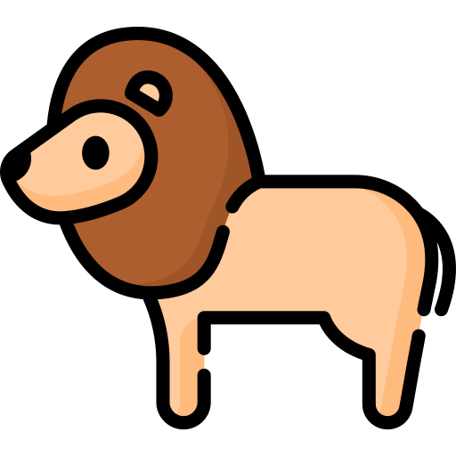
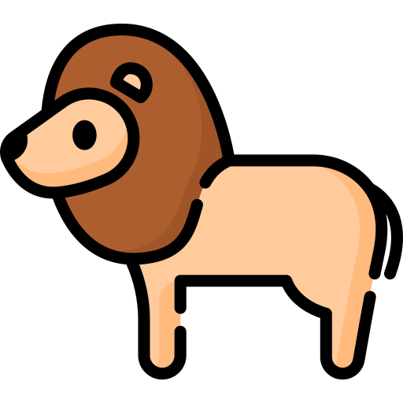

News
- Dec 2021: Paper on contrastive learning for robust text classification got accepted in AAAI 2022.
Publications
2022
-
C2L: Causally Contrastive Learning for Robust Text Classification.
Seungtaek Choi*, Myeongho Jeong*, Hojae Han, and Seung-won Hwang. (* equal contribution)
AAAI 2022.
-
C2L: Causally Contrastive Learning for Robust Text Classification.
Seungtaek Choi*, Myeongho Jeong*, Hojae Han, and Seung-won Hwang. (* equal contribution)
AAAI 2022.
-
Structure-Augmented Keyphrase Generation.
Jihyuk Kim, Myeongho Jeong, Seungtaek Choi, and Seung-won Hwang.
EMNLP 2021.
[PDF]
-
Counterfactual Generative Smoothing for Imbalanced Natural Language Classification.
Hojae Han, Seungtaek Choi, Myeongho Jeong, Jin-woo Park, and Seung-won Hwang.
CIKM 2021.
[PDF]
-
Label and Context Augmentation for Response Selection at DSTC8.
Myeongho Jeong*, Seungtaek Choi*, Jinyoung Yeo, and Seung-won Hwang. (* equal contribution)
Transactions on Audio, Speech, and Language Processing (TASLP), 2021.
2nd/3rd prize at DSTC8 (Track2 Sub-task1).
[PDF]
-
Label-Efficient Training for Next Response Selection.
Seungtaek Choi*, Myeongho Jeong*, Jinyoung Yeo, and Seung-won Hwang. (* equal contribution)
EMNLP 2020 (workshop, SustaiNLP).
[PDF]
-
Retrieval-Augmented Controllable Review Generation.
Jihyeok Kim, Seungtaek Choi, Reinald Kim Amplayo, and Seung-won Hwang.
COLING 2020.
[PDF]
-
Less is More: Attention Supervision with Counterfactuals for Text Classification.
Seungtaek Choi, Haeju Park, Jinyoung Yeo, and Seung-won Hwang.
EMNLP 2020.
[PDF]
-
Conditional Response Augmentation for Dialogue using Knowledge Distillation.
Myeongho Jeong*, Seungtaek Choi*, Hojae Han, Kyungho Kim, and Seung-won Hwang. (* equal contribution)
INTERSPEECH 2020.
[PDF]
-
Meta-Supervision for Attention using Counterfactual Estimation.
Seungtaek Choi, Haeju Park, and Seung-won Hwang.
DSEJ 2020.
Highly Rated ICDM Issue Invitation.
[PDF]
-
Counterfactual Attention Supervision.

 

Seungtaek Choi, Haeju Park, and Seung-won Hwang.
ICDM 2019.
[PDF]
-
MICRON: Multigranular Interaction for Contextualizing Representation in Non-factoid Question Answering.
Hojae Han*, Seungtaek Choi*, Haeju Park, and Seung-won Hwang. (* equal contribution)
EMNLP 2019.
[PDF]
-
Visual Choice of Plausible Alternatives: An Evaluation of Image-based Commonsense Causal Reasoning.
Jinyoung Yeo, Gyungbok Lee*, Gengyu Wang*, Seungtaek Choi, Hyunsouk Cho, Reinald Kim Amplayo, and Seung-won Hwang. (* equal contribution)
LREC 2018.
[PDF]
-
Machine-translated Knowledge Transfer for Commonsense Causal Reasoning.
Jinyoung Yeo, Gengyu Wang, Hyunsouk Cho, Seungtaek Choi, and Seung-won Hwang.
AAAI 2018.
[PDF]
Awards & Scholarships
- SustaiNLP registration grant at EMNLP 2020
- Student Travel Grant at INTERSPEECH 2020
- Naver 2019 PhD Fellowship from Naver
- Student Travel Award from ICDM 2019
- Google Travel Grant for ICDM 2019 from Google
- 3rd Place of BIG 2017 CUP Challenge at BIG 2017 conference co-located with WWW 2017
- Top Winner of BIG 2016 CUP Challenge at BIG 2016 conference co-located with WWW 2016
- Computer Science Department Scholarship at Yonsei University 2017-2018
Experience
- Research Internship, Conv AI @ SK T-brain (Aug 2019 ~ Oct 2019)
- Teaching Assitant, Artificial Intelligence @ Yonsei (2017 Spring)